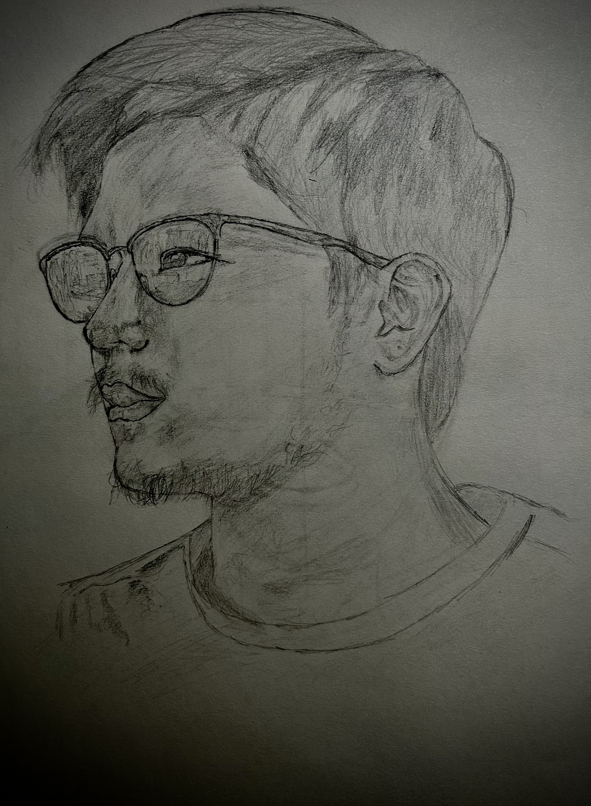

A little bit more about me...

As a kid, I randomly realized that I was sort of good at drawing. I was 11 when I started drawing from a reference. I was born and raised in Baguio, Philippines and I lived there for twelve years. I moved to the United States in 2017. Being in a new country and being forced to assimilate to American culture was difficult at first. I was to myself for quite some time and art provided me solace. Art has allopwed me to express myself through different forms. These include drawing, photography, coding, and hands on crafts. My work is influenced by video games that I enjoy, animes that I watch, basking in God's creation, and much more. I also want to mention that a lot of my strength comes from the Lord and I am eternally grateful for Him.
Conveniently, this portfolio enabled me to gather 6 years worth of work. I was able to see my progress and realize how long ago a lot of these works have been. At first, I was heading down the drawing route but I let go of the gas pedal. I started getting an interest in photography and along the way I picked up coding, since I'm a Game Design Major. These past few months has taught me how to program motors and to be handy through a robotics class. I was not expecting to take it since the course name was Special Topics. Being able to code and do physical crafts has made me versatile in being able to express my thoughts, feelings, and ideas. Blending both technology and physical work has a good balance.
As I continue to grow as a designer, I want to keep improving my skills and this website represents my journey so far. Thank you for stopping by.